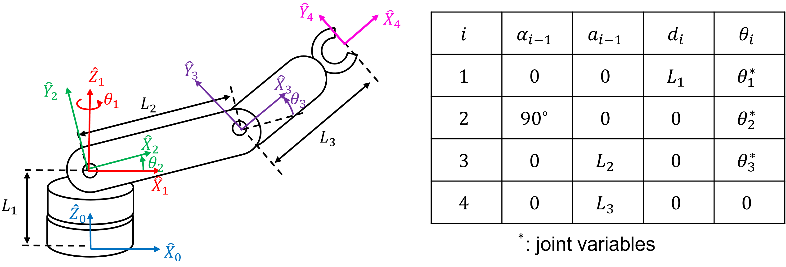

❄️ ICE4: Spatial Math for Python#
A note on this document
This document is known as a Jupyter notebook; it is used in academia and industry to allow text and executable code to coexist in a very easy to read format. Blocks can contain text or executable code. To run the executable code in this notebook, click  . For blocks containing code, press
. For blocks containing code, press Shift + Enter, Ctrl+Enter, or click the arrow on the block to run the code. Earlier blocks of code need to be run for the later blocks of code to work.
Introduction#
This in-class exercise will introduce the spatialmath package that will be used throughout the semester to control robotic arms.
Documentation#
This in-class exercise has been adapted from the Spatial Math for Python. Refer to the follwing links for more details.
Low-Level Spatial Math Functions#
Transformation Matrices in 2D#
First, import the low-level transform functions
from spatialmath.base import * # import low-level functions
import numpy as np
# We can create a rotation matrix in 2-dimensional space
R = rot2(np.pi/4) # the angle is specified in radians.
print(R)
# The object type of R can be found by
print(type(R))
# R is a numpy.ndarray object
# We can find the determinant of the matrix such as
d = np.linalg.det(R)
print(d)
[[ 0.70710678 -0.70710678]
[ 0.70710678 0.70710678]]
<class 'numpy.ndarray'>
1.0
As it is expected, R is a 2 by 2 matrix that is a numpy.ndarray object.
Important
The objects returned by the low-level spatialmath functions are numpy arrays.
We can also create a homogeneous transformation matrix in 2-D that is a 3 by 3 matrix.
# Homogeneous transformation matrix for a rotation of 30 deg
T = trot2(30, 'deg')
print(T)
# Create a homogeneous transformation in 2-D that represents
# a translation of (1,2) followed by a rotation of 45 deg
T1 = transl2(1,2)@trot2(np.pi/4) # It is trans-'el'-2 not trans-one-2
print(T1)
type(T1)
[[ 0.8660254 -0.5 0. ]
[ 0.5 0.8660254 0. ]
[ 0. 0. 1. ]]
[[ 0.70710678 -0.70710678 1. ]
[ 0.70710678 0.70710678 2. ]
[ 0. 0. 1. ]]
numpy.ndarray
Note
* is for element-wise multiplication whereas @ is for matrix multiplication.
The function transl2 creates a relative pose with a finite translation but zero rotation, while trot2 creates a relative pose with a finite rotation but zero translation. We can plot this, relative to the world coordinate frame, by
trplot2(T1, frame='A')
<AxesSubplot:xlabel='X', ylabel='X'>
If it does not display a plot in PyCharm, you need to install matplotlib package. Go to File > Settings > Project > Python Interpreter. Click + to install matplotlib. Once installation is complete add to your code
import matplotlib.pyplot as plt
and after the trplot2() function add
plt.show()
Use plotvol2 to modify the plot area
trplot2(T1, frame='A')
plotvol2([0,2,0,3], grid=True) # axis dimension: x = [0,2], y=[0,3]
<AxesSubplot:xlabel='X', ylabel='Y'>
We can run help function to learn details of these functions by
help(trplot2)
We can create another relative pose which is a displacement of (2,1) and zero rotation
T2 = transl2(2,1)
print(T2)
[[1. 0. 2.]
[0. 1. 1.]
[0. 0. 1.]]
Now we can compose the two relative poses
T3 = T1@T2
print(T3)
[[ 0.70710678 -0.70710678 1.70710678]
[ 0.70710678 0.70710678 4.12132034]
[ 0. 0. 1. ]]
and plot them as
trplot2(T1, frame='A', width=1)
trplot2(T2, frame='B', color='red', width=1)
trplot2(T3, frame='C', color='green', width=1)
plotvol2([0,4,0,5], grid=True)
<AxesSubplot:xlabel='X', ylabel='Y'>
Note
Notice that the displacement of (2,1) has been applied with respect to frame {A}. It is important to note that the final displacement is not (3,3) because the displacement is with respect to the rotated coordinate frame.
The noncommutativity of composition is clearly demonstrated by
T4 = T2@T1
trplot2(T1, frame='A', width=1)
trplot2(T2, frame='B', color='red', width=1)
trplot2(T3, frame='C', color='green', width=1)
trplot2(T4, frame='D', color='black')
plotvol2([0,4,0,5], grid=True)
<AxesSubplot:xlabel='X', ylabel='Y'>
and we can see that Frame {D} is different to Frame {C}.
Now we can define a point \([3,2]^\top\) relative to the world frame (Frame {0})
P_0 = np.array([3,2]).reshape([2,1]) # it must be a 2 by 1 column vector
print(P_0)
[[3]
[2]]
which is a column vector.
We can determine the coordinate of the point with respect to {A} by $\(^0\tilde{\mathbf{p}} = {^0T}_A {^A\tilde{\mathbf{p}}} \)\( and then rearrange as \)\({^A\tilde{\mathbf{p}}} = {^AT_0} {^0\tilde{\mathbf{p}}} = {^0T^{-1}_A} {^0\tilde{\mathbf{p}}} \)$ Substituting numeric values
p_0 = e2h(P_0) # convert from Euclidean to homogeneous form
print(p_0)
p_A = np.linalg.inv(T1)@p_0
print(p_A)
[[3.]
[2.]
[1.]]
[[ 1.41421356]
[-1.41421356]
[ 1. ]]
where we first convert the Euclidean point coordinates to homogeneous form by appending a one. The result is also in homogeneous form and has a negative y-coordinate in frame {A}. Using h2e we could also have expressed this as
P_A = h2e(np.linalg.inv(T1)@p_0)
print(P_A)
[[ 1.41421356]
[-1.41421356]]
You can use set_printoptions to change the way foating point numbers and numpy arrays are displayed
float_formatter = "{:.2f}".format
np.set_printoptions(formatter={'float_kind':float_formatter})
print(P_A)
[[1.41]
[-1.41]]
Transformation Matrices in 3D#
The spatial maths package provides functions to compute rotation matrices in 3D, for example \(R_X(\theta)\) is
R = rotx(np.pi/2)
print(R)
[[1.00 0.00 0.00]
[0.00 0.00 -1.00]
[0.00 1.00 0.00]]
The function rotx returns the rotation matrix that rotates a point around the x-axis for an input in radians. The functions roty and rotz compute \(R_Y(\theta)\) and \(R_Z(\theta)\), respectively. The corresponding coordinate frame can be displayed graphically
trplot(R)
<Axes3DSubplot:xlabel='X', ylabel='X'>
To illustrate compounding of rotations we will rotate the frame again, this time around its y-axis
R = rotx(np.pi/2)@roty(90, 'deg')
print(R)
trplot(R)
[[0.00 0.00 1.00]
[1.00 0.00 -0.00]
[-0.00 1.00 0.00]]
<Axes3DSubplot:xlabel='X', ylabel='X'>
The non-commutativity of rotation can be shown by reversing the order of the rotations:
R = roty(np.pi/2)@rotx(np.pi/2)
print(R)
trplot(R)
[[0.00 1.00 0.00]
[0.00 0.00 -1.00]
[-1.00 0.00 0.00]]
<Axes3DSubplot:xlabel='X', ylabel='X'>
The ZYX Euler angles \(R=R_Z(\psi)R_Y(\theta)R_X(\phi)\) is commonly used in robotic arms. The Euler angles are the 3-vector \((\psi, \theta, \phi)\). For example, to compute the equivalent rotation matrix for \((60^\circ, 45^\circ, 30^\circ)\) we write
Rzyx = rotz(np.pi/6)@roty(np.pi/4)@rotx(np.pi/3)
print(Rzyx)
[[0.61 0.28 0.74]
[0.35 0.74 -0.57]
[-0.71 0.61 0.35]]
or more conveniently
Rzyx = rpy2r(np.pi/3, np.pi/4, np.pi/6) # roll-pitch-yaw to rotation matrix
print(Rzyx)
[[0.61 0.28 0.74]
[0.35 0.74 -0.57]
[-0.71 0.61 0.35]]
The function rpy2r(alpha, beta, gamma) transforms roll-pitch-yaw angles to a rotation matrix. The default is ZYX Euler angles - rotate by gamma about the z-axis, then by beta about the new y-axis, then by alpha about the new x-axis. The inverse is
rpy = tr2rpy(Rzyx)
print(rpy)
[1.05 0.79 0.52]
in radians or
rpy = tr2rpy(Rzyx, unit='deg')
print(rpy)
[60.00 45.00 30.00]
in degrees. To compute the rotation matrix for XYZ Euler angles with \((60^\circ, 45^\circ, 30^\circ)\) we write
Rxyz = rotx(np.pi/6)@roty(np.pi/4)@rotz(np.pi/3)
print(Rxyz)
[[0.35 -0.61 0.71]
[0.93 0.13 -0.35]
[0.13 0.78 0.61]]
or
Rxyz = rpy2r(np.pi/3, np.pi/4, np.pi/6, order='xyz')
print(Rxyz)
[[0.35 -0.61 0.71]
[0.93 0.13 -0.35]
[0.13 0.78 0.61]]
The inverse is
rpy = tr2rpy(R, unit='deg', order='xyz')
print(rpy)
[-90.00 0.00 90.00]
A homogeneous transformation matrix can be implemented by
T = rpy2tr(0, 90, 0, unit='deg', order='zyx')
print(T)
[[0.00 0.00 1.00 0.00]
[0.00 1.00 0.00 0.00]
[-1.00 0.00 0.00 0.00]
[0.00 0.00 0.00 1.00]]
which is a 4 by 4 matrix. We can extract the Euler angles by
rpy = tr2rpy(T, unit='deg')
print(rpy)
[0.00 90.00 -0.00]
The trplot function supports various plotting styles as follows.
trplot( transl(1,2,3), frame='A', rviz=True, width=1)
trplot( transl(3,1, 2), color='red', width=3, frame='B')
trplot( transl(4, 3, 1)@trotx(np.pi/3), color='green', frame='c', dims=[0,4,0,4,0,4])
<Axes3DSubplot:xlabel='X', ylabel='Y'>
We can visualize a rotation more powerfully using the tranimate function which animates a rotation
# Jupyter notebook cannot properly animate transformation matrices.
# You must run it in PyCharm.
T = transl(4, 3, 4)@trotx(2)@troty(-2)
tranimate(T, frame='A', dims=[0, 5], nframes=200)
showing the world frame rotating into the specified coordinate frame. You can also save the animation to a file by
tranimate(T, frame='A', dims=[0, 5], nframes=200, movie='out.mp4')
High-Level Spatial Math Functions#
The spatialmath package supports high-level classes that abstract the low-level numpy arrays into objects. These objects obey the rules associated with the mathematical groups SO(2), SE(2), SO(3), SE(3), twists, and quaternioins.
To create an object representing a rotation of 90 degrees about the x-axis is
import numpy as np
from spatialmath import * # import high-lelel spatialmath functions
R1 = SO3.Rx(np.pi/2)
print(R1)
1 0 0
0 0 -1
0 1 0
The object type of R1 can be found by
type(R1)
spatialmath.pose3d.SO3
Important
The objest returned by the high-level spatialmath functions are not numpy arrays.
The functions we used earlier, such as rotx, roty, rotz, rpy2r, returned the numpy array type. The compounding of rotations can be found by
Rx = SO3.Rx(np.pi/2)
Ry = SO3.Ry(np.pi/2)
R = Rx * Ry # We use * not @ for matrix multiplication for SO3 objects.
print(R)
0 0 1
1 0 0
0 1 0
Note that we use * for matrix multiplication. We can find the corresponding Euler angles
float_formatter = "{:.2f}".format
np.set_printoptions(formatter={'float_kind':float_formatter})
print(R.eul('deg')) # eul returns ZYZ Euler angles
print(R.rpy('deg')) # rpy return ZYX Euler angles in roll(x)-pitch(y)-yaw(z) order.
[-0.00 90.00 90.00]
[90.00 0.00 90.00]
R = SO3.Rz(30, 'deg')*SO3.Ry(45, 'deg')*SO3.Rx(60, 'deg')
print(R.rpy('deg')) # return roll(x), pitch(y), and yaw(z)
[60.00 45.00 30.00]
print(R.rpy('deg', 'xyz')) # return XYZ Euler angles in roll(x)-pitch(y)-yaw(z) order.
[-24.60 47.66 58.33]
A pure translation in 3-D can be represented by
T = SE3(1,2,3) # Special Euclidean group.
print(T)
1 0 0 1
0 1 0 2
0 0 1 3
0 0 0 1
which is a 4 by 4 matrix. A transformation matrix representing a translation followed by a rotation can be obtained by
T = SE3(1,2,3)*SE3.Rx(30, 'deg')
print(T)
1 0 0 1
0 0.866 -0.5 2
0 0.5 0.866 3
0 0 0 1
A rotation followed by a translation in 3-D can be obtained by
T = SE3.Rx(30, 'deg')*SE3(1,2,3)
print(T)
1 0 0 1
0 0.866 -0.5 0.2321
0 0.5 0.866 3.598
0 0 0 1
which is different than a translation followed by a rotation.
Note
We used SE3.Rx() not SO3.Rx(). SE3.Rx() returns a 4 by 4 SE(3) matrix whereas SO3.Rx() returns 3 by 3 SO(3) matrix.
We can print the pose (position and orientation) by
T.printline()
t = 1, 0.232, 3.6; rpy/zyx = 30°, 0°, 0°
Hint
Do not use print(T) if you want to print the pose. Instead, use T.printline(). You still need to use print(T)` to print the transformation matrix.
We can plot the transformation by
T.plot()
Tip
You can find the class/function references of the spatial maths package here
Deliverables#
Submit your code to Bitbucket and provide the outputs in Gradescope.
Deliverable 1#
For this exercise, use spatialmath_ex1.py in your local repository.
Using the ZYX Euler angles, find the rotation matrix \(R_{ZYX}(\psi,\theta,\phi)\) for \(\psi=45^\circ, \theta=60^\circ, \phi=45^\circ\).
(i) Use low-level spatial math functions to find \(R_{ZYX}\) and the Euler angles from \(R_{ZYX}\).
(ii) Use high-level spatial math functions to find \(R_{ZYX}\) and the Euler angles from \(R_{ZYX}\).
Did you get the same Euler angles, \(\psi\), \(\theta\), and \(\phi\)? If not, explain why.
Deliverable 2#
For this exercise, use spatialmath_ex2.py in your local repository.
Using the ZYX Euler angles, find the rotation matrix \(R_{ZYX}(\psi,\theta,\phi)\) for \(\psi=45^\circ, \theta=90^\circ, \phi=45^\circ\).
(i) Use low-level spatial math functions to find \(R_{ZYX}\) and the Euler angles from \(R_{ZYX}\).
(ii) Use high-level spatial math functions to find \(R_{ZYX}\) and the Euler angles from \(R_{ZYX}\).
Did you get the same Euler angles, \(\psi\), \(\theta\), and \(\phi\)? If not, explain why.
Deliverable 3#
Shown below is the 3 DoF revolute-revolute-revolute (RRR) robotic arm we discussed in Lesson 21.
{kind=link}
Download RRR.py from Teams > General > Files > Class Materials > Python Files. Complete the forkine function for the robot. Use the D-H table to construct the transformation matrices.
Push your code to your repository using git.